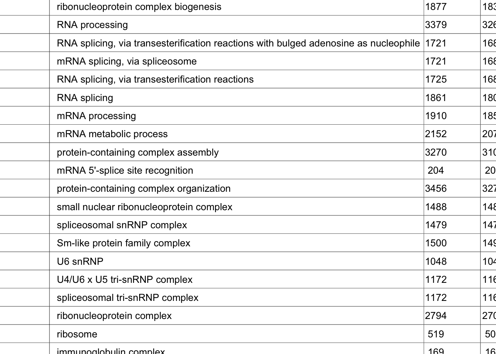

Differential Gene Expression (DGE) Analysis
Last updated: 2023-07-24
Checks: 7 0
Knit directory: mecfs-dge-analysis/
This reproducible R Markdown analysis was created with workflowr (version 1.7.0). The Checks tab describes the reproducibility checks that were applied when the results were created. The Past versions tab lists the development history.
Great! Since the R Markdown file has been committed to the Git repository, you know the exact version of the code that produced these results.
Great job! The global environment was empty. Objects defined in the global environment can affect the analysis in your R Markdown file in unknown ways. For reproduciblity it’s best to always run the code in an empty environment.
The command set.seed(20230618) was run prior to running
the code in the R Markdown file. Setting a seed ensures that any results
that rely on randomness, e.g. subsampling or permutations, are
reproducible.
Great job! Recording the operating system, R version, and package versions is critical for reproducibility.
Nice! There were no cached chunks for this analysis, so you can be confident that you successfully produced the results during this run.
Great job! Using relative paths to the files within your workflowr project makes it easier to run your code on other machines.
Great! You are using Git for version control. Tracking code development and connecting the code version to the results is critical for reproducibility.
The results in this page were generated with repository version 5252856. See the Past versions tab to see a history of the changes made to the R Markdown and HTML files.
Note that you need to be careful to ensure that all relevant files for
the analysis have been committed to Git prior to generating the results
(you can use wflow_publish or
wflow_git_commit). workflowr only checks the R Markdown
file, but you know if there are other scripts or data files that it
depends on. Below is the status of the Git repository when the results
were generated:
Ignored files:
Ignored: .DS_Store
Ignored: .Rhistory
Ignored: .Rproj.user/
Ignored: data/.DS_Store
Ignored: output/batch-correction-limma/
Unstaged changes:
Modified: analysis/_site.yml
Modified: output/counts_vst.csv
Modified: output/counts_vst_limma.csv
Modified: output/res_aff_vs_unaff.csv
Modified: output/res_aff_vs_unaff_df_genename_05.csv
Modified: output/res_aff_vs_unaff_genename.csv
Note that any generated files, e.g. HTML, png, CSS, etc., are not included in this status report because it is ok for generated content to have uncommitted changes.
These are the previous versions of the repository in which changes were
made to the R Markdown (analysis/analysis.Rmd) and HTML
(docs/analysis.html) files. If you’ve configured a remote
Git repository (see ?wflow_git_remote), click on the
hyperlinks in the table below to view the files as they were in that
past version.
| File | Version | Author | Date | Message |
|---|---|---|---|---|
| html | 0b76a23 | sdhutchins | 2023-07-12 | Build site. |
| Rmd | f6e6036 | sdhutchins | 2023-07-12 | wflow_publish("analysis/*") |
| html | fad56f5 | sdhutchins | 2023-07-06 | Build site. |
| Rmd | 41b1c38 | sdhutchins | 2023-07-06 | wflow_publish("analysis/*") |
| html | ae8df0e | sdhutchins | 2023-07-06 | Build site. |
| Rmd | 091a513 | sdhutchins | 2023-07-06 | wflow_publish("analysis/*") |
| html | 53d12da | sdhutchins | 2023-07-06 | Build site. |
| Rmd | bbdd7e3 | sdhutchins | 2023-07-06 | wflow_publish("analysis/*") |
| html | ad9ce58 | sdhutchins | 2023-07-01 | Build site. |
| Rmd | b5cecfb | sdhutchins | 2023-07-01 | wflow_publish("analysis/*") |
| html | 597034d | sdhutchins | 2023-06-28 | Build site. |
| html | 08f6320 | sdhutchins | 2023-06-28 | Build site. |
| Rmd | 8895f16 | sdhutchins | 2023-06-28 | Add code block for package install. |
| html | 37ab164 | sdhutchins | 2023-06-28 | Build site. |
| Rmd | 3009016 | sdhutchins | 2023-06-28 | Add gprofiler. |
| Rmd | dbea49f | sdhutchins | 2023-06-27 | Add analysis and update site |
| html | dbea49f | sdhutchins | 2023-06-27 | Add analysis and update site |
| html | 19c181e | sdhutchins | 2023-06-23 | Build site. |
| Rmd | 13c1acc | sdhutchins | 2023-06-23 | wflow_publish("analysis/") |
| html | 6133d80 | sdhutchins | 2023-06-23 | Build site. |
| Rmd | df39c69 | sdhutchins | 2023-06-23 | wflow_publish("analysis/") |
DGE Analysis Setup
Ensure you have all necessary libraries installed and load the helper code.
At a later date, renv will be integrated to ensure
reproducibility of this analysis.
Use the below code to install these packages:
# Install packages from CRAN
install.packages(c("tidyverse", "RColorBrewer", "pheatmap", "gprofiler2", "plotly"))
# Install packages from Bioconductor
install.packages("BiocManager")
BiocManager::install(c("DESeq2", "genefilter", "limma", "biomaRt"))library(tidyverse) # Available via CRAN
library(DESeq2) # Available via Bioconductor
library(RColorBrewer) # Available via CRAN
library(pheatmap) # Available via CRAN
library(genefilter) # Available via Bioconductor
library(limma) # Available via Bioconductor
library(gprofiler2) # Available via CRAN
library(biomaRt) # Available via Bioconductor
library(plotly) # Available via CRAN
library(ggpubr)
library(rmarkdown)Data Import
We will be importing counts data from the star-salmon pipeline and our metadata for the project which is hosted on Box. This also ensures data is properly ordered by sample id.
counts <- read_tsv("data/star-salmon/salmon.merged.gene_counts_length_scaled.tsv")
# Use first column (gene_id) for row names
counts = data.frame(counts, row.names = 1)
counts$Ensembl_ID = row.names(counts)
drop = c("Ensembl_ID","gene_name")
gene_info = counts[,drop]
counts = counts[ , !(names(counts) %in% drop)] # remove both columns
# Import metadata
sample_metadata <- read_csv("data/MECFS_RNAseq_metadata_2023_06_23.csv")
row.names(sample_metadata) <- sample_metadata$RNA_Samples_id
# Check that data is ordered properly
check_order(sample_metadata = sample_metadata, counts = counts)[1] "Data matches and is ordered by sample id."DESeq2 Analysis
sample_metadata$Family = factor(sample_metadata$Family)
sample_metadata$Affected = factor(sample_metadata$Affected)
sample_metadata$Batch = factor(sample_metadata$Batch)
sample_metadata$Gender = factor(sample_metadata$Gender)
# Account for Family later but batch is accounted for
dds <- DESeqDataSetFromMatrix(countData = round(counts), colData = sample_metadata, design = ~ Batch + Affected)
# Pre-filtering: Keep only rows that have at least 10 reads total
keep = rowSums(counts(dds)) >= 10
dds = dds[keep,]
# Run DESeq function
dds = DESeq(dds)
# Normalize gene counts for differences in seq. depth/global differences
counts_norm = counts(dds, normalized=TRUE)Data transformation and visualization
Perform count data transformation by variance stabilizing transformation (vst) on normalized counts.
Batch correction with limma
counts_vst = assay(vsd)
write.csv(counts_vst, file="output/counts_vst.csv")
mm = model.matrix(~ Family + Affected, colData(vsd))
counts_vst_limma = limma::removeBatchEffect(counts_vst, batch=vsd$Batch, design=mm)Coefficients not estimable: batch2 Sample distances heatmap
sampleDists = dist(t(assay(vsd_limma)))
sampleDistMatrix = as.matrix(sampleDists)
rownames(sampleDistMatrix) = paste(vsd_limma$Batch, vsd_limma$Family, sep=" | ")
colnames(sampleDistMatrix) = paste(vsd_limma$RNA_Samples_id, vsd_limma$Family, sep=" | ")
colors = colorRampPalette(rev(brewer.pal(9, "Blues")))(255)
pheatmap(sampleDistMatrix, clustering_distance_rows=sampleDists, clustering_distance_cols=sampleDists, col=colors)
Principal Components Analysis
pcaData = plotPCA(vsd, intgroup=c("Batch", "Family", "Affected"), returnData=TRUE)
percentVar = round(100 * attr(pcaData, "percentVar"))
p1 <- ggplot(pcaData, aes(PC1, PC2, shape=factor(Batch), fill=factor(Affected), color=factor(Family))) + geom_point(size=5) + xlab(paste0("PC1: ",percentVar[1],"% variance")) + ylab(paste0("PC2: ",percentVar[2],"% variance")) + coord_fixed()
p1
ggplot(pcaData, aes(PC1, PC2, shape=factor(Batch), color=factor(Affected))) +
geom_point(size=5) + xlab(paste0("PC1: ",percentVar[1],"% variance")) + ylab(paste0("PC2: ",percentVar[2],"% variance")) + coord_fixed()
Heatmap of top 50 & top 100 genes
This is a heatmap for 50 genes with the highest variance across samples.
topVarGenes = head(order(-rowVars(assay(vsd))),50)
mat = assay(vsd_limma)[ topVarGenes, ]
mat = mat - rowMeans(mat)
df = as.data.frame(colData(vsd)[,c("Batch", "Affected")])
pheatmap(mat, annotation_col=df, fontsize = 5)
This is a heatmap of the top 100 genes with the highest variance across samples.
topVarGenes = head(order(-rowVars(assay(vsd_limma))),100)
mat = assay(vsd_limma)[ topVarGenes, ]
mat = mat - rowMeans(mat)
df = as.data.frame(colData(vsd_limma)[,c("Batch", "Family", "Affected")])
pheatmap(mat, annotation_col=df, fontsize = 6)
Comparison/Contrast of Affected_Yes_vs_No
res_aff_vs_unaff = results(dds, contrast=c("Affected", "Yes", "No"))
res_aff_vs_unaff= res_aff_vs_unaff[order(res_aff_vs_unaff$padj),]
summary(res_aff_vs_unaff)
out of 29623 with nonzero total read count
adjusted p-value < 0.1
LFC > 0 (up) : 20, 0.068%
LFC < 0 (down) : 10, 0.034%
outliers [1] : 134, 0.45%
low counts [2] : 3997, 13%
(mean count < 1)
[1] see 'cooksCutoff' argument of ?results
[2] see 'independentFiltering' argument of ?resultswrite.csv(res_aff_vs_unaff, file="output/res_aff_vs_unaff.csv")
res_aff_vs_unaff_df = as.data.frame(res_aff_vs_unaff)
res_aff_vs_unaff_05 = subset(res_aff_vs_unaff_df, padj < 0.05) topgenes_byensemblid = head(rownames(res_aff_vs_unaff_05),50)
topgenes_aff_vs_unaff_05 = assay(vsd_limma)[topgenes_byensemblid,]
topgenes_aff_vs_unaff_05 = topgenes_aff_vs_unaff_05 - rowMeans(topgenes_aff_vs_unaff_05)
# Convert ensemblids
ensemblids <- topgenes_byensemblid
rownames(topgenes_aff_vs_unaff_05) <- gene_info$gene_name[match(ensemblids, gene_info$Ensembl_ID)]
topgenes_aff_vs_unaff_05 <- topgenes_aff_vs_unaff_05[order(row.names(topgenes_aff_vs_unaff_05)), ]
df = as.data.frame(colData(vsd_limma)[,c("Batch", "Family", "Affected")])
pheatmap(topgenes_aff_vs_unaff_05, annotation_col=df, fontsize = 5)
res_aff_vs_unaff_df_genename = res_aff_vs_unaff_df
res_aff_vs_unaff_df_genename$Ensembl_ID = row.names(res_aff_vs_unaff_df)
res_aff_vs_unaff_df_genename = merge(x=res_aff_vs_unaff_df_genename, y=gene_info, by.x ="Ensembl_ID", by.y="Ensembl_ID", all.x=T)
res_aff_vs_unaff_df_genename = res_aff_vs_unaff_df_genename[,c(dim(res_aff_vs_unaff_df_genename)[2],1:dim(res_aff_vs_unaff_df_genename)[2]-1)]
res_aff_vs_unaff_df_genename = res_aff_vs_unaff_df_genename[order(res_aff_vs_unaff_df_genename[,"padj"]),]
write.csv(res_aff_vs_unaff_df_genename,file="output/res_aff_vs_unaff_genename.csv" )res_aff_vs_unaff_df_genename_05= subset(res_aff_vs_unaff_df_genename, padj < 0.05)
res_aff_vs_unaff_df_genename_05 = res_aff_vs_unaff_df_genename_05[order(res_aff_vs_unaff_df_genename_05$padj),]
write.csv(res_aff_vs_unaff_df_genename_05, file="output/res_aff_vs_unaff_df_genename_05.csv")# Select specific genes to show
# set top = 0, then specify genes using label.select argument
ggmaplot(res_aff_vs_unaff_df_genename, main = "Affected vs Unaffected",
fdr = .05, fc = 2, size = 0.4,
genenames = as.vector(res_aff_vs_unaff_df_genename$gene_name),
ggtheme = ggplot2::theme_minimal(),
legend = "top", top = 19, font.label = c("bold", 8), label.rectangle = TRUE,
font.legend = "bold", font.main = "bold"
)
| Version | Author | Date |
|---|---|---|
| ad9ce58 | sdhutchins | 2023-07-01 |
Enrichment analysis
all_genes_res <- gost(query = genes_biomart$ensembl_gene_id, organism = "hsapiens", significant = TRUE)
gostplot(all_genes_res, capped = FALSE, interactive = TRUE)publish_gosttable(all_genes_res, use_colors = TRUE, show_columns = c("source", "term_name", "term_size", "intersection_size"), filename = NULL)
| Version | Author | Date |
|---|---|---|
| 53d12da | sdhutchins | 2023-07-06 |
Genes of Interest
genes_of_interest <- c("ACAD9/CFAP92", "ACADM", "ADORA2A", "ADRA1D", "ANKZF1", "AVPR1B", "CARMIL2", "CCDC178", "CENPF", "COQ2", "CR2", "DCTPP1", "DNASE1L3", "DPEP1", "EN03", "FCRL3", "FASTKD1", "GCKR", "GIMAP2", "HAGHL", "HSD11B1", "IRF2BP2", "KCNJ18", "LRCOL1", "LRBA, MAB21L2", "MFN1", "MRPS18B", "NLRP12", "P2RX7", "PGP", "PIEZO1", "PLCG2", "RERGL", "RPS6KC1", "SCN4A", "SIAE", "SLC11A2", "SLC12A3", "SLC4A1", "SLC6A12", "SLC9A9", "TDO2", "THEMIS", "TF", "TRAFD1", "UBASH3B", "WASHC5")
genes_interest_mart <- retrieve_gene_info(values = genes_of_interest, filters = "hgnc_symbol")
filtered_by_interest <- filter(res_aff_vs_unaff_df_genename, Ensembl_ID %in% genes_interest_mart$ensembl_gene_id_version)
paged_table(filtered_by_interest, options = list(rows.print = 15))
R version 4.1.1 (2021-08-10)
Platform: x86_64-apple-darwin17.0 (64-bit)
Running under: macOS Big Sur 10.16
Matrix products: default
BLAS: /Library/Frameworks/R.framework/Versions/4.1/Resources/lib/libRblas.0.dylib
LAPACK: /Library/Frameworks/R.framework/Versions/4.1/Resources/lib/libRlapack.dylib
locale:
[1] en_US.UTF-8/en_US.UTF-8/en_US.UTF-8/C/en_US.UTF-8/en_US.UTF-8
attached base packages:
[1] stats4 stats graphics grDevices utils datasets methods
[8] base
other attached packages:
[1] rmarkdown_2.22 ggpubr_0.6.0
[3] plotly_4.10.2 biomaRt_2.50.3
[5] gprofiler2_0.2.2 limma_3.50.3
[7] genefilter_1.76.0 pheatmap_1.0.12
[9] RColorBrewer_1.1-3 DESeq2_1.34.0
[11] SummarizedExperiment_1.24.0 Biobase_2.54.0
[13] MatrixGenerics_1.6.0 matrixStats_1.0.0
[15] GenomicRanges_1.46.1 GenomeInfoDb_1.30.1
[17] IRanges_2.28.0 S4Vectors_0.32.4
[19] BiocGenerics_0.40.0 lubridate_1.9.2
[21] forcats_1.0.0 stringr_1.5.0
[23] dplyr_1.1.2 purrr_1.0.1
[25] readr_2.1.4 tidyr_1.3.0
[27] tibble_3.2.1 ggplot2_3.4.2.9000
[29] tidyverse_2.0.0 workflowr_1.7.0
loaded via a namespace (and not attached):
[1] colorspace_2.1-0 ggsignif_0.6.4 ellipsis_0.3.2
[4] rprojroot_2.0.3 XVector_0.34.0 fs_1.6.2
[7] rstudioapi_0.14 farver_2.1.1 ggrepel_0.9.3
[10] bit64_4.0.5 AnnotationDbi_1.56.2 fansi_1.0.4
[13] xml2_1.3.4 splines_4.1.1 cachem_1.0.8
[16] geneplotter_1.72.0 knitr_1.43 jsonlite_1.8.5
[19] broom_1.0.5 annotate_1.72.0 dbplyr_2.3.2
[22] png_0.1-8 shiny_1.7.4 compiler_4.1.1
[25] httr_1.4.6 backports_1.4.1 Matrix_1.5-4.1
[28] fastmap_1.1.1 lazyeval_0.2.2 cli_3.6.1
[31] later_1.3.1 htmltools_0.5.5 prettyunits_1.1.1
[34] tools_4.1.1 gtable_0.3.3 glue_1.6.2
[37] GenomeInfoDbData_1.2.7 rappdirs_0.3.3 Rcpp_1.0.10
[40] carData_3.0-5 jquerylib_0.1.4 vctrs_0.6.3
[43] Biostrings_2.62.0 crosstalk_1.2.0 xfun_0.39
[46] ps_1.7.5 mime_0.12 timechange_0.2.0
[49] lifecycle_1.0.3 rstatix_0.7.2 XML_3.99-0.14
[52] getPass_0.2-2 zlibbioc_1.40.0 scales_1.2.1
[55] vroom_1.6.3 hms_1.1.3 promises_1.2.0.1
[58] parallel_4.1.1 yaml_2.3.7 curl_5.0.1
[61] gridExtra_2.3 memoise_2.0.1 sass_0.4.6
[64] stringi_1.7.12 RSQLite_2.3.1 highr_0.10
[67] filelock_1.0.2 BiocParallel_1.28.3 rlang_1.1.1
[70] pkgconfig_2.0.3 bitops_1.0-7 evaluate_0.21
[73] lattice_0.21-8 labeling_0.4.2 htmlwidgets_1.6.2
[76] bit_4.0.5 processx_3.8.1 tidyselect_1.2.0
[79] magrittr_2.0.3 R6_2.5.1 generics_0.1.3
[82] DelayedArray_0.20.0 DBI_1.1.3 pillar_1.9.0
[85] whisker_0.4.1 withr_2.5.0 abind_1.4-5
[88] survival_3.5-5 KEGGREST_1.34.0 RCurl_1.98-1.12
[91] car_3.1-2 crayon_1.5.2 utf8_1.2.3
[94] BiocFileCache_2.2.1 tzdb_0.4.0 progress_1.2.2
[97] locfit_1.5-9.8 grid_4.1.1 data.table_1.14.8
[100] blob_1.2.4 callr_3.7.3 git2r_0.32.0
[103] digest_0.6.32 xtable_1.8-4 httpuv_1.6.11
[106] munsell_0.5.0 viridisLite_0.4.2 bslib_0.5.0